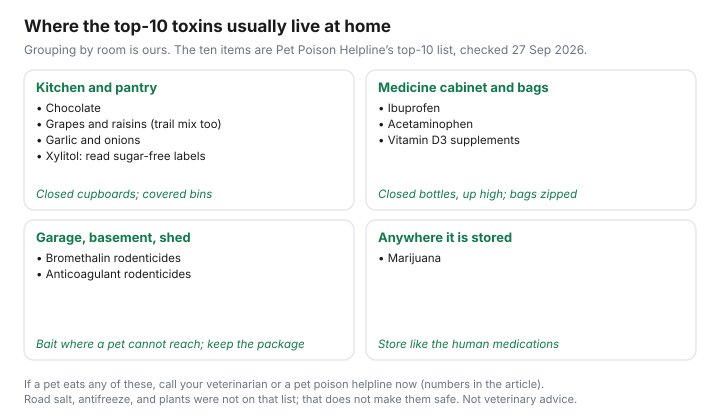

Pets · Canada
Pet-Proofing to Avoid Emergency Vet Bills: Toxins, Foreign Objects and Seasonal Hazards in Canada
The emergency invoice is often the price of something that was on a counter. What that invoice costs, once you are at the clinic, is the emergency-vet guide. This page stays on prevention, and only on hazards a page opened on 27 Sep 2026 actually named. Pet Poison Helpline’s top 10 is the list. A Canadian month-by-month hazard calendar was not on that page, so the chart groups the ten items by where they are usually kept at home instead. Not veterinary advice. If an animal is in trouble now, call a veterinarian or the helpline before you finish reading.
Key takeaways
- Pet Poison Helpline’s top 10, opened 27 Sep 2026: chocolate; grapes and raisins; garlic and onions; bromethalin; xylitol; ibuprofen; vitamin D3 supplements; marijuana; anticoagulant rodenticides; acetaminophen.
- The helpline is 1-855-764-7661, 24 hours, and an $89 USD fee applies per incident. Follow-up on that incident is included. Do not induce vomiting or use a home antidote unless they or a veterinarian tell you to.
- ASPCA Poison Control is 1-888-426-4435, 24 hours, every day. The page says a consultation fee may apply. It does not print the amount.
- Road salt, antifreeze, lilies, and a seasonal calendar were not on the top-10 page. They are not assigned a month or a dose here.
- Insurance and a low-cost clinic are how you pay if prevention fails. They are the insurance guide and the low-cost care guide. Neither replaces the phone call.
Room-by-room pet-proofing
Start where the named items are stored, not with a shopping list of gadgets. In the kitchen, the opened list puts chocolate, grapes and raisins, garlic and onions, and xylitol.
Xylitol is in some sugar-free foods. The page does not print brand names, so read the package rather than assuming a sweetener is safe. Garlic and onions are listed as Allium species. A soup left to cool is a kitchen problem. A closed cupboard is the control.
In the bathroom and on the bedside table, the list puts ibuprofen, acetaminophen, and vitamin D3 supplements. A weekly pill box is easy to knock over. Store human medication where the animal cannot open the container. The helpline asks you to have the package in hand if you call, which is a reason not to throw the bottle out before you know the animal is fine. Marijuana is on the list. Edibles are food to a dog. The page does not distinguish a form. Treat anything that contains it as one of the ten.
In the garage, shed, or the cupboard under the sink, the list puts bromethalin and anticoagulant rodenticides. Bait stations that a dog can carry into the house are the same item. The page does not say one rodenticide is the “safe” one. Both names are on the top 10. The parasite-prevention guide is a different product, the one your veterinarian doses. Do not confuse a bait block with that medication.
Common toxins: foods, medications, plants, antifreeze and de-icers
Foods on the opened list are chocolate, grapes and raisins, and garlic and onions. Medications and supplements are ibuprofen, acetaminophen, and vitamin D3.
The rodenticide pair is bromethalin and anticoagulant rodenticides. Xylitol and marijuana complete the ten. No milligram dose was printed. “A little” is not a category this page will create. Call.
Plants were not on that top-10 page. The ASPCA poison-control landing page says its experts publish information on plants, human foods, and human medications. The plant catalogue itself did not open on 27 Sep 2026. Lilies are not named here as a result. If you have flowers in the house, identify the plant and ask, using the ASPCA line or the helpline, before you decide the bouquet is fine. Antifreeze and sidewalk de-icers were also absent from the top 10. The absence is not a safety claim. It means this draft has no sourced dose and will not borrow one. Read the label, keep the jug closed, and call if it was licked or eaten.
Foreign objects: socks, toys, corn cobs
Socks, toy pieces, and corn cobs are not on the toxin list. They are still a reason animals end up in surgery, and this page will not invent the surgery price.
The cost, once you are at the clinic, is the emergency guide. Prevention is dull: laundry in a closed hamper, toys you would notice if a piece went missing, and corn cobs in the garbage the animal cannot open. A cob is a seasonal food in the sense that people eat corn in late summer. The helpline did not assign it a month. String, bones, and sticks were not on the page that opened. The same habit covers them without a new medical claim: if it can be swallowed whole, it does not stay on the floor.
Seasonal hazards in Canada: winter salt, summer heat, holidays
Winter salt and summer heat are real Canadian conditions. They are not, on the page that opened, a ranked toxin with a date.
Do not treat a social-media dose of salt as a fact this site checked. After a winter walk, wipe or rinse paws so the animal does not lick whatever was on the sidewalk. In hot weather, the risk people ask about is heat, not a pantry item. No temperature threshold for a dog in a Canadian yard was on the poison pages opened. Use a veterinarian’s advice for that animal, and do not leave an animal in a closed car because a chart failed to print a degree. Holiday chocolate is the one seasonal link the list does support: chocolate is item one, and it is in many households in December. The page still does not say “December.” It says keep chocolate out of reach. That instruction is not seasonal. It is every week the chocolate is in the house. The vet-bill guide is the invoice if the week goes wrong.
What to do in an emergency: poison lines and the nearest ER
Pet Poison Helpline’s own steps are short. Remove the animal from the area.
Check that it is breathing and acting normally. Do not give a home antidote. Do not induce vomiting unless a veterinarian or the helpline says to. Call or chat at 1-855-764-7661, or call your veterinarian. Have the container. The fee is $89 USD per incident, and follow-up consultations on that incident are included. The page says earlier treatment is easier. It does not promise a dollar saving, and this site will not invent one.
ASPCA Poison Control, 1-888-426-4435, says it is available 24 hours a day, 365 days a year, and that a one-time consultation fee may apply. The amount was not on the page. Either line can tell you to go to a clinic. The nearest emergency hospital is a name you look up before you need it, on a fridge card, not a national directory this page did not open. Payment questions at the door are the emergency guide and, if you carry a policy, the insurance guide. A low-cost clinic’s hours are often not overnight. Check them on the low-cost care guide before you assume that clinic is the emergency destination.
Checklist
| Hazard | Season on the source | Risk the page states | Prevention |
|---|---|---|---|
| Chocolate | Not assigned | On the top-10 toxin list. No dose printed. | Closed cupboard. Call if it was eaten. |
| Grapes and raisins | Not assigned | On the list. No dose printed. | Off the counter, including trail mix. |
| Garlic and onions | Not assigned | On the list as Allium species. | Leftovers covered and binned where they cannot be opened. |
| Bromethalin and anticoagulant rodenticides | Not assigned | Both are on the list. | Bait where a pet cannot carry it. Keep the package. |
| Xylitol | Not assigned | On the list. Brands not named. | Read sugar-free labels. |
| Ibuprofen, acetaminophen, vitamin D3 | Not assigned | On the list. | Closed bottles, not a bedside pill box on the floor. |
| Marijuana | Not assigned | On the list. | Stored as carefully as the human medications. |
| Road salt, antifreeze, plants, corn cobs | Not on the list | No dose opened. Not declared safe. | Label, closed container, and a phone call if eaten. Plants: identify first. |

Sources & date stamps
- Pet Poison Helpline, top 10 pet poisons, opened 27 Sep 2026. The ten items named above. No doses. No months.
- Pet Poison Helpline home page, opened 27 Sep 2026. 1-855-764-7661, 24/7, $89 USD per incident, follow-up included. Do not induce vomiting or give a home antidote unless instructed. Remove the pet, check breathing.
- ASPCA Poison Control, opened 27 Sep 2026. 1-888-426-4435, 24/7/365. A consultation fee may apply. The dollar amount was not printed. The plant catalogue did not open.
- Road salt, antifreeze doses, lily toxicity, foreign-body surgery prices, and a summer-heat temperature: not opened. Not filled in.
Frequently asked questions
What household items are toxic to pets?
Pet Poison Helpline’s top 10, by its call volume, opened 27 Sep 2026, are chocolate, grapes and raisins, garlic and onions, bromethalin, xylitol, ibuprofen, vitamin D3 supplements, marijuana, anticoagulant rodenticides, and acetaminophen. The page does not print a dose. If an animal may have eaten one, call the helpline at 1-855-764-7661 or a veterinarian, and have the package in your hand. An $89 USD fee applies per incident. This is not veterinary advice.
Is road salt dangerous for dogs?
Road salt and ice melt were not on the top-10 list that opened, and no dose or paw-injury figure was on that page. This draft will not invent one. Wipe paws after a winter walk and read the product label, then call the helpline or a veterinarian if the animal ate the product or is unwell. The same is true of antifreeze: it was not on that list, so it is not given a homemade treatment here.
What should I do if my dog eats something?
Pet Poison Helpline says to remove the animal from the area, check that it is breathing and acting normally, and not to give a home antidote or induce vomiting unless a veterinarian or the helpline tells you to. Call 1-855-764-7661 or your veterinarian, and keep the package. The $89 USD incident fee includes follow-up with that incident. If the animal needs a clinic, go. The emergency-bill guide is what to ask about payment. It is not a treatment plan.
How can I pet-proof my home?
Walk the rooms where the top-10 items actually live: kitchen for chocolate, grapes, xylitol, garlic, and onions; bathroom and bedside for ibuprofen, acetaminophen, and vitamin D; garage or shed for rodent bait. Put those products where the animal cannot open them. Foreign objects such as socks, toys, and corn cobs were not on the toxin list. They are a separate habit: laundry up, toys that break removed, and cobs off the counter. The list is prevention. It is not a promise that an emergency will not happen.
Which plants are toxic to cats?
A plant list did not open on 27 Sep 2026, and lilies were not on the Pet Poison Helpline top 10 that did open. This page will not name a plant as toxic without that page. Keep cut flowers and houseplants away from cats until you have checked the plant with the helpline or the ASPCA poison-control line, 1-888-426-4435, which says a consultation fee may apply and does not print the amount. Not veterinary advice.
Researched and drafted with AI assistance and fact-checked against official Canadian sources. How we create content.